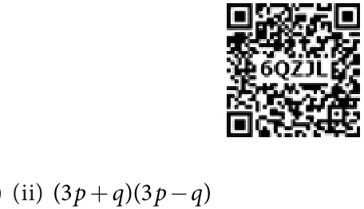

- 5.An artist can spend any amount between ₹ 80 to ₹ 200 on brushes. If cost of each
brush is ₹ 5 and there are 6 brushes in each packet, then how many packets of brush can the artist buy?
Objective Type Questions
- 6.The solutions of the inequation \(3 \le p \le 6\) are (where p is a natural number)
- (i)4, 5 and 6 (ii) 3, 4 and 5 (iii) 4 and 5 (iv) 3, 4, 5 and 6
- 7.The solution of the inequation \(5x + 5 \le 15\) are (where x is a natural number)
- 8.The cost of one pen is ₹ 8 and it is available in a sealed pack of 10 pens. If Swetha has \(- -\)
- (i)1 and 2 (ii) 0, 1 and 2 (iii) 2, 1, 0, 1, 2.. (iv) 1, 2, 3..
only ₹ 500, how many packs of pens can she buy at the maximum?
- (i)10 (ii) 5 (iii) 6 (iv) 8
- 9.The inequation that is represented on the number line as shown below is _______
-9 -8 -7 -6 -5 -4 -3 -2 -1 0 1 2 3 4 5 6 7 8 9
- (i)\(- 4 < x < 0\) (ii) \(- 4 \le x \le 0\) (iii) \(- 4 < x \le 0\) (iv) \(- 4 \le x < 0\)
- 1.Using identity, find the value of
- (i)(4 9. )

- (ii)(100 1. )
- (iii)(1 9. )´(2 1. )
- 2.Factorise : 4x -9y
- 3.Simplify using identities (i) (3p+q)(3p+r) ( + )( - )
- 4.Show that (x \(+2y) -\) (x \(- 2y) =8xy\)
- 5.The pathway of a square paddy field has 5 m width and length of its side is 40 m. Find
the total area of its pathway. (Note: Use suitable identity)
Challenge Problems
- 6.If \(X =a - 1\) and \(Y =1 - b\) , then find X +Y and factorize the same.
- 7.Find the value of (x - y)(x + y)(x \(+ y\) )
- 8.Simplify \((5x - 3y) - (5x +3y)\)
- 9.Simplify: (i) \((a+b) -\) (a - b) (ii) \((a+b) +\) (a - b)
- 10.A square lawn has a 2 m wide path surrounding it. If the area of the path is 136 m ,
find the area of lawn.
- 11.Solve the following inequalities.
- (i)\(4n + 7 \ge 3n + 10\), n is an integer.
- (ii)\(6(x + 6) \ge 5(x - 3)\), x is a whole number.
- (iii)\(- 13 \le 5x + 2 \le 32\), x is an integer.